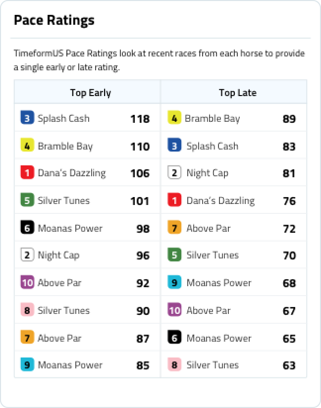

TimeformUS past performances are available for Free with DRF Mobile PPs for a limited time.
TimeformUS past performances are available for Free with DRF Mobile PPs for a limited time. Access Free TFUS PPs
INTRODUCING TIMEFORMUS
Use the Pace Projector and pace-adjusted speed figures to complement and raise your handicapping game.
Facts & Features
INTRODUCING TIMEFORMUS
Use the Pace Projector and pace-adjusted speed figures to complement and raise your handicapping game.
Facts & Features
What are TimeformUS PPs?
TimeformUS past performances are a revolutionary way to look at pace and pace-adjusted speed figures to get an instant look at how the race will be run. TimeformUS Speed Figures are different from Beyer Speed Figures because they are pace-adjusted. Our early Pace Projector, Finish Position projector, and final pace-adjusted speed figures will make your handicapping faster, better, and more profitable.
Understanding New Modern Pace Projector
The TimeformUS Pace Projector gives you an early pace scenario based on contenders’ running style, and highlights if a race projects to have a fast pace, favors frontrunners, or has no speed at all. The Finish Position Projector gives you an algorithmic basis from which to form your own handicapping opinion. The Projector adjusts for factors such as habitual running style, blinkers, maturity, and more.
Elements of Pace Projector
- Early Pace
- Finish Positions
- Pace Flags
- Best Late Pace Rating
Elements of Pace Projector
Early PaceOur classic Pace Projector. The projected positions of each horse at the quarter-mile mark for sprint races (less than one mile) and the half-mile mark for route races (one mile or longer).

How TFUS PPs Work
How TimeformUS PPs Work
TFUS Speed Figures
TFUS Speed Figures
TimeformUS Speed Figures are different from Beyer Speed Figures and uniquely account for the pace of each race. If a front-runner gets away with a slow early pace, we will use our algorithms to downgrade its TFUS Speed Figure. Similarly, if a horse goes too fast early, our speed figure for the race will typically be upgraded.
Spotlight Figures
Spotlight Figures
Our algorithms look at the race conditions and sort through each horse’s previous races to find the best, most relevant figure the horse has earned. In dirt races, most spotlight figures will be brown. In turf races, most will be green. In synthetic races, most will be light blue. But in some cases, a horse’s most relevant race will be on another surface than the current race, so the color-coding will help you quickly see that.
TimeformUS Selection
TimeformUS Selection
TimeformUS makes Top 3 picks for each race. We use our algorithms to create a points system to rank each horse in the race, with a reliance on TimeformUS Speed Figures and our Early Pace Projector. The more races a horse has, the more relevant the rating. When horses have limited starts, we use trainer data to enhance the selections.
Note: Selections are not available until the card goes final, typically 36-48 hours before the race.
Pace Ratings
The top TimeformUS Early and Late Pace Ratings are created based on an average of each horse’s recent early and late pace figures. Also taken into account are the horse’s running style, distance, and surface of each race.
Pace Ratings
The Early Ratings are the foundation of the TimeformUS Pace Projector. They identify which horses are likely to contest the pace.
The Late Ratings attempt to indicate which horses will be finishing fastest through the stretch.